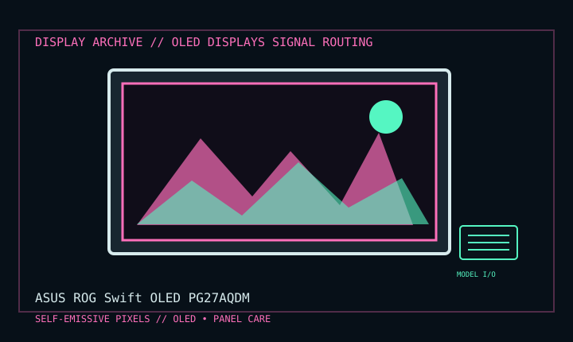

[ INDIVIDUAL COMPONENT // DISPLAY ARCHIVE ]
ASUS ROG Swift OLED PG27AQDM
26.5-inch QHD OLED gaming monitor with high-refresh operation, 2023.

IDENTIFICATION: Match the exact model suffix, region and installed option boards to the cited manual and rear label. Do not infer electrical compatibility from connector shape.
Model-specific specifications
| Catalog class | Oled Displays |
|---|---|
| Exact product | ASUS ROG Swift OLED PG27AQDM |
| Era / purpose | 26.5-inch QHD OLED gaming monitor with high-refresh operation, 2023. |
| Panel / image | 26.5-inch OLED, 2560 × 1440 at up to 240 Hz; 16:9, 0.03 ms GtG rating per ASUS. |
| Inputs | DisplayPort 1.4 with DSC and two HDMI 2.0 inputs; USB 3.2 Gen 1 Type-A hub plus USB upstream and headphone output. |
| Power / mechanical | Internal power supply, 100–240 V AC, 50/60 Hz; typical consumption under 32 W in specification. Tilt/swivel/pivot, 110 mm height adjustment, 100 × 100 mm VESA. |
| Panel care | ASUS OLED Care includes screen saver, pixel cleaning and screen move features; functions/labels depend on firmware. |
Revision, timing & host compatibility
Use DisplayPort 1.4 with DSC for native QHD 240 Hz; HDMI 2.0 does not provide the same maximum PC refresh path. Check host DSC/VRR support and current firmware. PG27AQDM is distinct from the “R” revision and similarly named newer models; verify exact suffix and manual before tuning.
Before operation, compare source signal type, scan/frame timing, pinout, interface bandwidth, input-board configuration and mains/DC rating against the model-specific manual and nameplate. A listed maximum mode is not a promise of optimum image quality.
Vintage preservation & repair notes
Allow the built-in OLED care cycle, record hours/firmware and avoid interrupting pixel cleaning. Minimize static high-luminance HUDs; retain stand and power cable. Do not manually force panel cleaning or open the OLED assembly; follow ASUS service and warranty instructions.
Record serial/date code, configuration, all installed interface boards, accessories, image condition, calibration state, test source and document edition. Disconnect power before external cleaning and use only the manufacturer-approved procedure; do not open CRT/LCD/OLED equipment without qualified service practice.
Manufacturer manuals & specifications
- ASUS PG27AQDM Manuals & SupportOfficial ASUS manual portal for the exact PG27AQDM model.
- ASUS ROG Swift OLED PG27AQDM SpecificationsManufacturer product specification and supported operating mode.